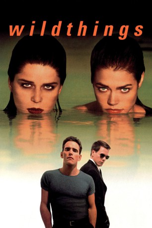

#3158 Wild Things
 gesehen am 26.02.2016
gesehen am 26.02.2016
 
 IMDB-Wertung: 6.5 / 10
IMDB-Wertung: 6.5 / 10  Metascore: 52
Metascore: 52 
Sam Lombardo ist ein junger Lehrer an der High School in Blue Bay, Florida. Die attraktive Schülerin Kelly van Ryan himmelt ihn an und versucht, ihn zu verführen, aber er widersteht ihr. Daraufhin beschuldigt sie ihn, sie vergewaltigt zu haben, und Kellys reiche, einflussreiche Mutter sorgt dafür, dass Lombardo vom Dienst suspendiert wird. Als sich ein weiteres Mädchen bei der Polizei meldet und behauptet, Lombardo habe sie vor einem Jahr vergewaltigt, wird er festgenommen und muss sich vor Gericht verantworten ...
Jahr: 1998
Dauer: 115 Minuten
FSK: 16
Land: USA Studio: Columbia PicturesTonspuren: DTS - ,
Untertitel: Deutsch,
Auflösung: 1080p (1920x800) Größe: 9390 MB
Genre: Thriller, Drama, Krimi, Mystery
Regisseur: John McNaughton
Drehbuch: Stephen Peters
Soundtrack: George S. Clinton
Darsteller:
 Kevin Bacon als Ray Duquette
Kevin Bacon als Ray Duquette Matt Dillon als Sam Lombardo
Matt Dillon als Sam Lombardo Neve Campbell als Suzie Toller
Neve Campbell als Suzie Toller Theresa Russell als Sandra Van Ryan
Theresa Russell als Sandra Van Ryan Denise Richards als Kelly Van Ryan
Denise Richards als Kelly Van Ryan- Daphne Rubin-Vega als Gloria Perez
 Robert Wagner als Tom Baxter
Robert Wagner als Tom Baxter Bill Murray als Ken Bowden
Bill Murray als Ken Bowden- Carrie Snodgress als Ruby
- Jeff Perry als Bryce Hunter
 Marc Macaulay als Walter
Marc Macaulay als Walter- Dennis Neal als Art Maddox
- Paulo Benedeti als Kirk
- Eduardo Yáñez als Frankie Condo
 Jennifer Taylor als Barbara Baxter
Jennifer Taylor als Barbara Baxter Antoni Corone als Police Chief
Antoni Corone als Police Chief- Robert Deacon als Prisoner
- Anthony Giaimo als Dave
 Nancy Duerr als Reporter #1
Nancy Duerr als Reporter #1 Christopher De Stefano als Courtroom Observer , uncredited
Christopher De Stefano als Courtroom Observer , uncredited- Pati Lauren als Courthouse Reporter #2 , uncredited
- Tonia Madenford als Courtroom Spectator , uncredited
- Laurie Wallace als Bikini Girl , uncredited
- Cory Pendergast als Jimmy Leach
- Toi Svane Stepp als Nicole
- Diane Adams als School Secretary
- Victoria Bass als Judge
- Ted Bartsch als Bailiff
- Leonor Anthony als Ken's Secretary
- Manny Suárez als Georgie
- Janet Bushor als Barmaid
- Gina LaMarca als Hooker
- Margo Peace als Reporter #2
- Keith Wilson als Reporter #3
- Nelson Oramas als Policeman #1
- Michael Dean Walker als Policeman #2
- Jesse Muson als Policeman #3
- Kimberly Lamaze als Policewoman #1
- Rebecca White als Policewoman #2
- Patrick Fox als Courtroom Observer , uncredited
Datei: X:\1998\Wild Things (1998, FSK16, 1920x800).mkv seit 06.02.2016
Festplatte: HD 1996-2002
 Es gibt insgesamt 86 Filme in der Gruppe '1998'
Es gibt insgesamt 86 Filme in der Gruppe '1998'